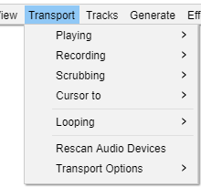

Transport Menu
- 
|
Playing
The Playing submenu commands control playback in Audacity. You can Start, Stop or Pause playback of the audio in your project.
Recording
The Recording submenu commands control recording in Audacity. You can Start, Stop or Pause recording in your project. You can either start a recording on your existing track or an a new track.
Scrubbing
Opens a cascading submenu where you can start, stop or switch to Scrub play or Seek play, or toggle the Scrub Ruler on/off.
Find out more about the Scrubbing submenu here.
Cursor to
The Cursor to submenu commands let you move the cursor to the start or end of the selection, track or any adjacent Clip that you may have.
Play Region
The Play Region submenu commands enable you to lock a play region and unlock it.
Rescan Audio Devices
Rescan for audio devices connected to your computer, and update the playback and recording dropdown menus in Device Toolbar.
Transport Options
The Transport Options submenu lets you manage and set various options for transport (playing and recording) in Audacity.